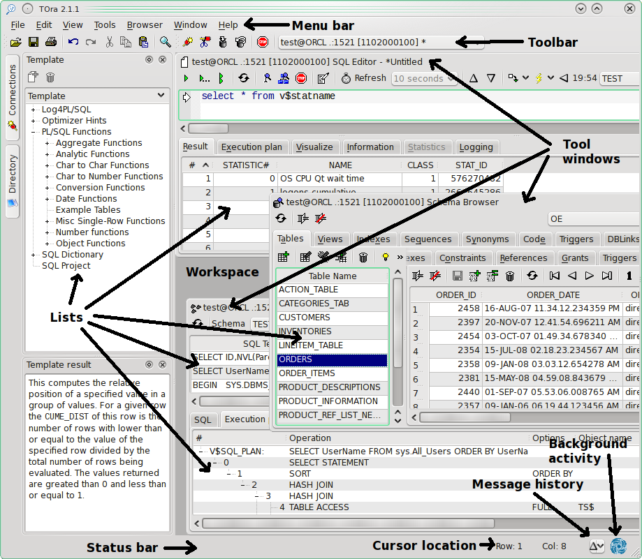
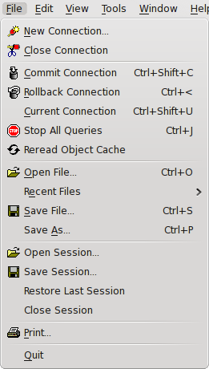
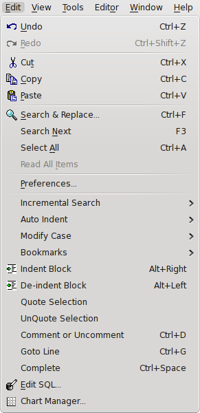
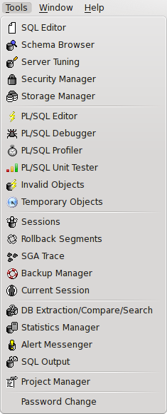
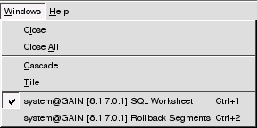
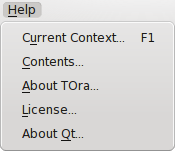

3.1 Elements of the main window
The main window in TOra has the following elements as shown below. It is assumed that you know how to handle a normal windows interface therefore no explanation about how to press buttons and select menus will be presented. If you are administrating Oracle you probably know how to handle a mouse.

Menubar
If you've ever used a windows program you will recognize most of the menus hopefully.
File menu

- New connection
- This will pop up the new connection dialog (see Connecting to a database) which is used to open new connections to the database.
- Close connection
- Will close the current connection to Oracle. If uncommitted data exists it will also ask if you want to commit or rollback the changes. Observe that any tools associated with this connection will also be closed when closing a connection.
- Commit connection
- Commit the changes currently made to the database.
- Rollback connection
- Rollback any changes made in the current connection.
- Current connection
- Set focus to change the current connection.
- Stop All Queries
- Stops all queries running in current session.
- Reread object cache
- Clear the object cache.
and read it again from the database.
- Open File
- This command will open a dialog asking you for a filename to load into the editor that currently holds the focus.
- Recent Files
- This item will have subitems of recently opened files which you can load into the editor that currently holds the focus.
- Save File
- This command will open a dialog asking you for a filename to save the contents of the editor that currently holds the focus. If the editor already has a filename this will be used and no dialog displayed.
- Save As
- This command will open a dialog asking you for a filename to save the contents of the editor that currently holds the focus.
- Open Session
- Open previously saved session.
- Save Session
- Save parameters of current session.
- Restore Last Session
- Open last saved session.
- Close Session
- Close current session.
- Print
- Will print the contents of the list or editor that currently holds the focus.
- Quit
- Close all connections and exit TOra.
Edit menu

- Undo
- Undo the latest change in the editor that currently holds the focus.
- Redo
- Redo a previous undo of the latest change in the editor that currently holds the focus.
- Copy
- Copy the current selection in the editor that currently holds the focus.
- Cut
- Cut the current selection in the editor that currently holds the focus.
- Paste
- Paste the contents of the clipboard into the editor that currently holds the focus.
- Search & Replace
- Display the search & replace dialog (see Search & Replace).
- Search Next
- Make another search with the current search settings.
- Select All
- Select all rows in the current editor.
- Read All Items
- Read all items available for a list. Normally TOra doesn't read all available rows for a query, just enough to fill the screen. Scrolling down will read more. Selecting this will read all available rows from the query, this could take a very long time and consume a lot of memory if selected for a large query result.
- Preferences
- Displays the preferences dialog (see Options) where all aspects of TOra are configured.
- Incremental Search
- .
- Auto Indent
- .
- Modify Case
- Change selected text to uppercase or lowercase.
- Bookmarks
- Manage bookmarks.
- Indent Block
- Indent selected block.
- De-indent Block
- Deindent selected block.
- Quote Selection
- Quote selection. This also handles quotes inside text being quoted.
- UnQuote Selection
- Unquote selection.
- Comment or Uncomment
- Comments/uncomments selected text.
- Goto Line
- Goes to specific line number.
- Complete
- Pop-up a list of possible completions. For tables and views this would give a list of columns after entering table/view name and a dot. If there is no dot a list of common statements is given. For example if you press ctrl+space after entering "sel" you will get options of "select" and "selection".
- Edit SQL
- This may not be available because it is actually a tool plugin. Can be used to customize SQL used by TOra to determine the state of a database(see SQL Editor).
- Chart Manager
- .
Tools menu

The entries of this menu start up new tools for the current connection (See connection management for more information about current connections). The contents of the menu may vary depending on which plugins are loaded.
Tool specific menu
There may be a tool specific menu entered between the Tools and Windows menus (In the screenshot at the top of current page it is called Browser). These are described in connection to the tools that display them.
Windows menu

- Close
- Close the current tool window.
- Close All
- Close all open windows. This will not close any database connections, only windows.
- Cascade
- Cascade the open windows over the workspace.
- Tile
- Tile the open windows over the workspace.
- Open windows
- Here windows will line up in a list in the same order as you open them.
Help menu

- Current Context
- This will display a help page on the context you are currently in. If no specific context is found the table of contents is shown.
- Content
- Open the help window displaying the contents of the TOra help.
- About TOra
- Display information about TOra copyrigh.
- License
- Display the license under which TOra is distributed.
- About Qt
- Display information about Qt.
Application toolbar
Using the toolbar you can perform the most common editing operations, handle your connections and open tool windows.
Editor buttons
- Load
- This command will open a dialog asking you for a filename to load into the editor that currently holds the focus.
- Save
- This command will open a dialog asking you for a filename to save the contents of the editor that currently holds the focus. If the editor already has a filename this will be used and no dialog displayed.
- Print
- Will print the contents of the list or editor that currently holds the focus
- Undo
- Undo the latest change in the editor that currently holds the focus.
- Redo
- Redo a previous undo of the latest change in the editor that currently holds the focus.
- Copy
- Copy the current selection the in editor that currently holds the focus.
- Cut
- Cut the current selection the in editor that currently holds the focus.
- Paste
- Paste the contents of the clipboard into the editor that currently holds the focus.
Tools
The buttons in this section can vary depending on which plugins were loaded at startup, they are described in the tools section (see Available tools) of the help. What is notable here is that when a button is pressed it is started for the currently selected connection available at the end of the application toolbar.
Connection management
All the buttons in this section have one thing in common. Except for the new connection they all operate on the currently selected connection. The currently open connections are available in a drop down list at the right of the toolbar. The selected item in this list is the connection that new tools will be working on and also any commit, rollback or close connection command.
The numbers behind the actual connection is the version of the Oracle server that this connection is made to.
- New connection
- This will pop up the new connection (see Connecting to a database) dialog which is used to open new connections to oracle.
- Close connection
- Will close the current connection to Oracle. If uncommitted data exists it will also ask if you want to commit or rollback the changes. Observe that any tools associated with this connection will also be closed when closing a connection.
- Commit connection
- Commit the changes currently made to the database.
- Rollback connection
- Rollback any changes made in the current connection.
Other items in the workspace
There are a few other items on the workspace that are worth taking notice of.
Statusbar
This will display any messages that TOra need to inform the user of. TOra generally takes the path of not bothering the user with pop ups when something goes wrong, but simply display it in the statusbar. Or at least that was my intention. Due to the fact that many people had problems understanding this the default behaviour of TOra is now to pop up a dialog displaying the error. However this dialog contains a checkbox to revert back to the old productive manner. So if something isn't working, make sure you check the statusbar if something went wrong.
There is an up button available to the right of the toolbar which when pressed can display a history of the contents of the status bar. This is also useful since the statusbar usually clears after certain amount of time but the information is always available here. Both the time until a message disappears and the amount of backlog to keep is configurable from the option dialog (see Options). If you select an item in the popup menu the contents of the entry will be opened in a memo editor (see memoeditor) where you can read them more easily and also copy the text more easily.
Next to the left is the coordinates of the editor that currently has the focus.
Fursthest to the right is swirling logo which will move whenever TOra is doing something in the background to indicate that the database is still busy performing some kind of operation in the background. The speed of the animation will reflect the number of background tasks that are currently running.
Tool windows
These are the tools that actually let you interact with Oracle. For more information check out the tools section (see Available tools) of the help. One thing to note about tool windows is that if the caption ends with a < digit > this is the digit that you can use together with the control modifier to select this window.
Workspace
The part of the main window that contain the tool windows.
Editors
For more information about key bindings etc. see Using editors.
Result List
These mean every kind of list displayed in TOra. For information about how to interact with these, see Using lists.
Charts
Used to visualize data, usually some kind of database statistics. There are no charts in the example window above, see Using charts.
Object Cache
When TOra opens a new connection to a database the database connected to is queried for all its objects and the synonyms available. This data is then used in most places when lists of objects are displayed. The thing to understand is that this data is cached so that any objects modified during the connection will not be visible unless you clear the cache and reread it from the database. As long as the object cache is read you can see the background activity swirling in the right part of the status bar.